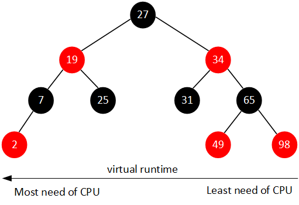

一、常用CPU监控命令
1.1 top
1 | top - 01:10:23 up 344 days, 2:42, 1 user, load average: 0.01, 0.08, 0.07 |
cpu相关指标需要关注:
- load average, 这个和uptime命令中的结果一样，用于衡量系统负载。
- 第一个数，1分钟系统负载
- 第二个数，5分钟系统负载
- 第三个数，15分钟系统负载
- 系统负载: R状态和D状态的进程的平均个数(1秒进行一次采样).
- R状态指的是正在占用CPU或者等待被调度进入CPU的进程(即都是可以运行的进程)。
- D状态指的是不可中断的进程.不可中断的原因很多，常见的是IO阻塞。
- 可以看出，系统负载高包含了IO负载(不可中断个数多)和CPU负载(等待调度到cpu运行的个数多)。
- 三个数衡量系统负载是在升高或者下降。
- $Cpu(s), cpu的各类占用比例，是所有核心的平均值。如果要看到各个核心的，需要按
1.- us, 用户态占用cpu比率
- sy, 内核态占用cpu比率(系统调用进入内核态)
- ni, 低nice(优先级)占用cpu比率, 这个值高，代表优先级低的进程占用cpu。
- id, idle占用cpu比率，即cpu空闲的比率。
- wa, 等待io的cpu比率, 其实这个不是占用cpu，但是仍然放在这里衡量。
- hi, 硬中断占用cpu比率.
- si, 软中断占用cpu比率.
- st, 通常忽略.
- 进程信息的第3列(PR)和第4列(NI)都是.
1.2 sar -p
sar, 系统活动报告, -p表示显示cpu相关信息。sar -p [${cpu_number}] ${simple_time}, sar -p完全可以被top代替，所以忽略。1.3 pidstat
非常有用，可以对进程进行周期性采样，显示进程的cpu占用率。新版本linux改命令仅采样当前占用cpu的进程。1
2
3
4
5
6
7
8
9
10
11
12
13
14
15
16
17
18$ pidstat 1
# 采样结果:
01时41分01秒 UID PID %usr %system %guest %CPU CPU Command
01时41分02秒 0 4385 0.99 0.00 0.00 0.99 0 AliYunDun
01时41分02秒 1001 13735 16.83 1.98 0.00 18.81 0 python
01时41分02秒 1001 13736 17.82 0.99 0.00 18.81 0 python
01时41分02秒 1001 13737 17.82 0.99 0.00 18.81 0 python
01时41分02秒 1001 13738 16.83 1.98 0.00 18.81 0 python
01时41分02秒 1001 13739 16.83 1.98 0.00 18.81 0 python
01时41分02秒 UID PID %usr %system %guest %CPU CPU Command
01时41分03秒 27 24183 4.95 0.00 0.00 4.95 0 mysqld
01时41分03秒 UID PID %usr %system %guest %CPU CPU Command
01时41分04秒 0 4385 1.01 0.00 0.00 1.01 0 AliYunDun
01时41分04秒 0 4590 2.02 0.00 0.00 2.02 0 ilogtail
01时41分04秒 1001 13669 0.00 1.01 0.00 1.01 0 pidstat
1.4 uptime
1.5 /proc/cpuinfo
可以看到cpu每个核心的信息, 直接看这个文件里面的核心有几个，就知道系统是几核。判断核心的运算性能，主要看bogomips参数，这个代表每秒百万指令的执行个数。
1.6 vmstat
1 | procs -----------memory---------- ---swap-- -----io---- -system-- ------cpu----- |
- swap
- si, 从磁盘换入到内存的次数
- so, 从内存换出到硬盘的次数
- io
- bi, 块输入
- bo, 块输出
- system
- in, 中断次数
- cs, 上下文切换次数(即进程切换次数)
- cpu
- us, 用户态cpu比例
- sy, 内核态cpu比例
- id, idle的cpu比例
- wa, 等待io的cpu比例
二、进程状态
可以通过man ps来看linux系统常见状态:1
2
3
4
5
6
7
8
9
10
11PROCESS STATE CODES
Here are the different values that the s, stat and state output specifiers (header "STAT" or "S") will display to describe the state of a process:
D uninterruptible sleep (usually IO)
R running or runnable (on run queue)
S interruptible sleep (waiting for an event to complete)
T stopped by job control signal
t stopped by debugger during the tracing
W paging (not valid since the 2.6.xx kernel)
X dead (should never be seen)
Z defunct ("zombie") process, terminated but not reaped by its parent
- D状态, 不可中断进程, 这个不可中断代表的是不会被别的进程打断，也不会进行信号处理，但是CPU硬中断处理还是要处理的。
- R状态, 运行中和可运行的进程，即正在占用CPU和被CPU调度的进程。
- S状态, 可中断的进程, 通常等待事件完成。
- T状态, 是处于暂停状态的进程
- 通过
kill -19 ${pid}暂停进程 - 通过
kill -18 ${pid}继续进程 - 通过
kill -l可以看到所有的信号
- 通过
- W状态, 老版本的(2.6内核版本之前)才存在, 是进程进行内存页映射的状态
- Z状态, 僵尸状态, 进程运行完后并不会死亡，而是处于僵尸状态，需要父进程进行回收。大量的僵尸进程会占用pid，把pid占用完后会导致新的进程无法创建。僵尸进程会释放掉原本内存、CPU和文件描述符(本质上不占用内存, 但是为了维持状态, 会占用微量内存)。如果父进程不存在了，会把子进程交给1号进程收养。
二、NUMA
NUMA(非一致性内存访问)是一种CPU架构:
- 每个CPU有自己的内存区, 这样可以避免多个CPU同时占用内存时的锁问题。
- CPU之间相连，以使得CPU跨内存区域访问，也就是对其他内存区的访问交给对应的CPU代理。
2.1 numactl -H
numactl -H, 对于numa结构，通过该命令查看numa相关指标.1
2
3
4
5
6
7
8
9
10
11available: 2 nodes (0-1)
node 0 cpus: 0 1 2 3 4 5 6 7 8 9 10 11 24 25 26 27 28 29 30 31 32 33 34 35
node 0 size: 65417 MB
node 0 free: 1507 MB
node 1 cpus: 12 13 14 15 16 17 18 19 20 21 22 23 36 37 38 39 40 41 42 43 44 45 46 47
node 1 size: 65536 MB
node 1 free: 3896 MB
node distances:
node 0 1
0: 10 21
1: 21 10
numa具体来说，并非是完全按照cpu来进行划分内存区的，而是把cpu进行分组划分给node，node内部的cpu之间的内存区域是加锁访问，不同node之间是分内存区域。
2.2 numastat
1 | node0 node1 |
三、中断
中断本质上就是CPU的异步机制, 中断通常由硬件触发。/proc/interrupts里面上系统上注册的中断。1
2
3
4
5
6
7
8
9
10
11
12
13
14
15
16
17
18
19
20
21
22
23
24
25
26
27
28
29
30
31
32
33
34
35
36
37
38 CPU0 CPU1
0: 53 0 IO-APIC-edge timer
1: 10 0 IO-APIC-edge i8042
4: 713 0 IO-APIC-edge serial
6: 3 0 IO-APIC-edge floppy
8: 0 0 IO-APIC-edge rtc0
9: 0 0 IO-APIC-fasteoi acpi
11: 33 0 IO-APIC-fasteoi uhci_hcd:usb1, virtio3
12: 15 0 IO-APIC-edge i8042
14: 0 0 IO-APIC-edge ata_piix
15: 0 0 IO-APIC-edge ata_piix
24: 0 0 PCI-MSI-edge virtio2-config
25: 1986852 32681567 PCI-MSI-edge virtio2-req.0
26: 7 0 PCI-MSI-edge virtio0-config
27: 12150473 189843945 PCI-MSI-edge virtio0-input.0
28: 91750351 111913513 PCI-MSI-edge virtio0-output.0
29: 94898904 105090350 PCI-MSI-edge virtio0-input.1
30: 4165153 201856517 PCI-MSI-edge virtio0-output.1
31: 0 0 PCI-MSI-edge virtio1-config
32: 33 0 PCI-MSI-edge virtio1-virtqueues
NMI: 0 0 Non-maskable interrupts
LOC: 3322397292 3183090417 Local timer interrupts
SPU: 0 0 Spurious interrupts
PMI: 0 0 Performance monitoring interrupts
IWI: 103728613 112975740 IRQ work interrupts
RTR: 0 0 APIC ICR read retries
RES: 187567014 177351111 Rescheduling interrupts
CAL: 146958098 53547641 Function call interrupts
TLB: 31948440 32303648 TLB shootdowns
TRM: 0 0 Thermal event interrupts
THR: 0 0 Threshold APIC interrupts
DFR: 0 0 Deferred Error APIC interrupts
MCE: 0 0 Machine check exceptions
MCP: 66857 66857 Machine check polls
ERR: 0
MIS: 0
PIN: 0 0 Posted-interrupt notification event
PIW: 0 0 Posted-interrupt wakeup event
interrupts文件包含了每个cpu所处理的中断信息。
- 第一列: 中断编号
- 第二和三列: 中断在对应核心上处理的次数
3.1 中断的瓶颈
当一个中断来了，CPU是必须暂停当前的任务，调用中断处理函数，在互联网中网卡收发包会触发中断，网卡的巨大流量造成频繁中断会给CPU带来压力, 若中断没有处理完又来了中断，则可能会导致中断丢失，网络中表现出来为丢包。
为了解救这类问题，将中断分段:
- 中断上半部: 即硬中断，通常只用来复制数据，将数据从硬件中复制到内核中。
- 中断下半部: 手段很多，通常是采用软中断，软中断用来解析内核中的数据。
下半部的消耗一般比上半部高，如果仍然出现瓶颈，通常是下半部占用cpu非常高。
3.2 timer中断
操作系统提供多进程并发使用CPU的能力，通过时间片的方式让R状态的进程使用CPU。时间片的功能由timer定时器中断，周期性中断CPU，让CPU判断是否需要切换进程。
四、CPU调度方案
进程和线程在调度器的角度来说都是一致，采用相同的算法来进行调度。这些线程在CPU来看，就是一堆进程。本质上Linux中，线程是轻量级进程。在Linux中线程和进程的唯一区别: 是否共享同一个进程资源(内存、工作目录、文件描述符、虚拟地址空间等等), 所以每个线程其实都是占用了一个pid的。
4.1 O1调度器
老版本Linux使用的调度器，基于时间片的。
4.1.1 IO密集型和CPU密集型
4.1.2 静态优先级(nice)
nice的范围是[-20, 19], 值越低，优先级越高
4.1.3 动态优先级(pr)
Linux2.6cpu会根据io密集和cpu密集来动态调整
4.2 CFS调度器
当前的Linux通常都是使用CFS调度器(完全公平调度)。目的是尽量使R状态的进程在一个周期内均分CPU。
cat /proc/sys/kernel/sched_latency_ns, 该文件描述了cfs均分cpu的周期, 即在latency_ns/n为当前每个进程的运行时间.n表示当前R状态的进程个数。cat /proc/sys/kernel/sched_min_granularity_ns, latency_ns/n的值小于该值，直接用该值做为进程的运行时间。cat /proc/sys/kernel/sched_child_runs_first, 该文件是一个开关，cfs可以控制是否为子进程总是先于父进程执行。如果关闭了，不一定谁先执行，看系统。
4.2.1 CFS调度远离
cfs采用了红黑树动态调整进程的调度优先级, 将进程放入到rbt中，进程的key用virtual runtime, 这个key表示进程的cpu占用时间。cpu调度时，每次把virtual runtime最小的进程拿出来运行，cpu占用完毕后更新该进程的virtual runtime, 进行下一次调度.

需要注意:
- 每个cpu核心都会有一个rbt
- rbt的初始key可能不为0(主要是为了避免创建一堆新进程导致其他进程无法获得运行机会)